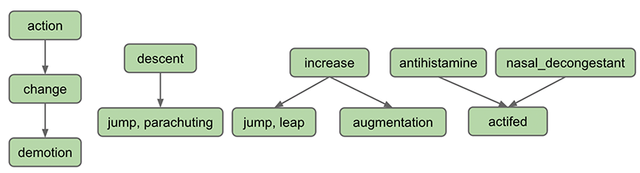
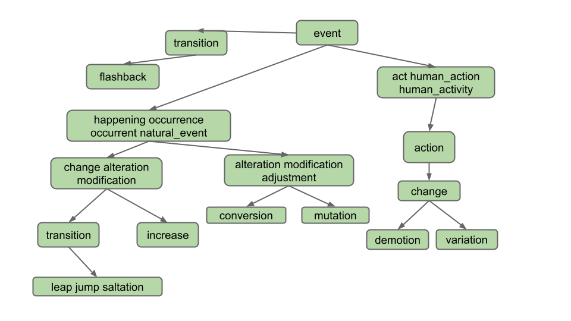
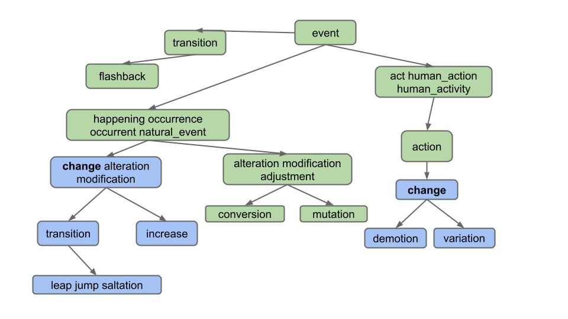
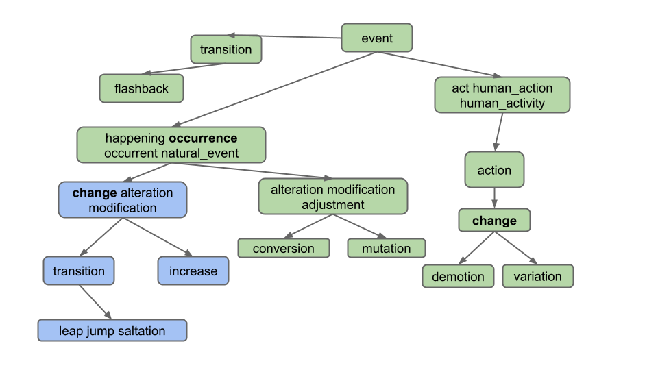
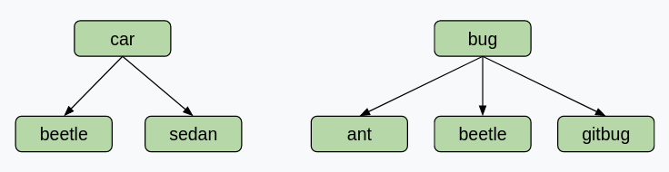

项目 2B：Ngordnet（Wordnet）
常见问题
每个作业都会在顶部链接一个常见问题。你也可以通过在 URL 末尾添加"/faq"来访问它。项目 2B 的常见问题位于 这里 。
检查点和设计文档截止日期：2024年3月15日
代码截止日期：2024年4月1日
在这个项目中，你将完成 NGordnet 工具的实现。
由于这是一个相当新的项目，可能偶尔会有错误或对说明的混淆。如果你注意到任何这类问题，请在 Ed 上发帖。
重要提示： 在你阅读完 2B 说明后，你可能会忍不住开始编码。请不要这样做！
在为 2B 实现任何代码之前，请阅读 2C 说明，因为你的设计可能会根据 2C 而改变。你可以在 这里 找到它。
然后，在开始编码之前完成 项目 2B/C：检查点 和 设计文档 。
设计说明
在设计你的项目时，提前考虑所有需求。提前规划将确保你在项目的某些阶段不需要重写所有代码。
如果你发现自己在复制粘贴或重复大量已经写过的代码，那么可能有机会直接重用它，或者稍微修改一下，这样你就不必经常重复了。
项目设置
这个项目的设置与其他实验/项目不同。请不要跳过这一步！
骨架代码设置
-
与本课程的其他作业类似，运行
git pull skeleton main来获取这个项目的骨架代码。 -
使用
此链接
下载这个项目的
data文件，并将它们移动到你的proj2b文件夹中，与src同级。
完成后，你的
proj2b
目录应该如下所示：
proj2b
├── data
│ ├── ngrams
│ └── wordnet
├── src
├── static
├── tests
入门指南
重要提示： 在开始编码甚至设计项目之前，你 真的 应该先完成 项目 2B/C： 检查点 。我们认为这对你理解项目会有帮助。我们还要求你向 Gradescope 提交一份 设计文档 。关于设计文档的更多细节可以在 交付成果和评分 中找到。
完成 项目 2B/C： 检查点
完成检查点后，完成 设计文档
项目的这一部分是为让你为实现设计出高效且正确的方案而设计的。你提出的设计对于处理这些情况将非常重要。在开始设计文档之前，请仔细阅读 2B 和 2C 的说明。
课程工作人员已经制作了一些关于项目和入门代码的介绍视频，可在 这里 查看。请注意，我们已经改变了项目结构，所以一些信息可能已经过时！
我们还创建了两个很棒的工具，你可以（也应该！）用它们来探索数据集，查看教学团队解决方案对特定输入的行为方式，并获取单元测试的预期输出（参见 测试你的代码 ）。我们会在这里以及说明的其他相关部分链接它们。
- Wordnet 可视化工具 ：有助于直观理解同义词集和下义词如何工作，并测试不同的单词/单词列表作为潜在的测试用例输入。点击"?"气泡了解如何使用这个工具的各种功能！
- 教学团队解决方案网页 ：有助于为不同的测试用例输入生成预期输出。用这个来编写你的单元测试！
通读整个 2B/C 说明并完成 项目 2B/C： 检查点
通读整个 2B/C 说明并完成 设计文档
使用 WordNet 数据集
在我们将 WordNet 整合到项目中之前，我们首先需要了解 WordNet 数据集。
WordNet 是一个"英语语言的语义词典"，被计算语言学家和认知科学家广泛使用；例如，它是 IBM 的 Watson 中的一个关键组件。WordNet 将单词分组为称为同义词集（synsets）的同义词集合，并描述它们之间的语义关系。其中一种关系是"是一种"（is-a）关系，它将一个 下义 词（更具体的同义词集）连接到一个 上义 词（更一般的同义词集）。例如，"变化"is"降级"的 上义词 ，因为"降级"是一种"变化"。"变化"反过来又是"行动"的 下义词 ，因为"变化"是一种"行动"。英语中一些下义关系的可视化描述如下：

上图中的每个节点都是一个 同义词集（synset） 。同义词集由一个或多个具有相同含义的英语单词组成。例如，一个同义词集是 "jump, parachuting" ，它代表用降落伞降落到地面的动作。"jump, parachuting"is"descent"的下义词，因为"jump, parachuting"是一种"descent"。
英语中的单词可能属于多个同义词集。这只是说单词可能有多个含义的另一种方式。例如，单词"jump"也属于同义词集 "jump, leap" ，它代表更具比喻性的跳跃概念（例如出勤率的跃升），而不是另一个同义词集中的字面意思（例如跳过水坑）。同义词集"jump, leap"的上义词是"increase"，因为"jump, leap"是一种"increase"。当然，"增加"某物还有其他方式：例如，我们可以通过"augmentation"来增加某物，因此在上图中我们有一个从"increase"指向"augmentation"的向下箭头也就不足为奇了。
同义词集不仅可以包含单词，还可以包含所谓的 搭配 。你可以把它们看作是经常一起出现以至于被视为一个单词的单个单词，例如 nasal_decongestant 。为了避免歧义，我们将用下划线_来表示搭配的组成单词，而不是英语中通常用空格分隔的惯例。为简单起见，在本文档中我们将搭配简称为"单词"。
一个同义词集可能是多个同义词集的下义词。例如，"actifed"既是"antihistamine"的下义词，也是"nasal_decongestant"的下义词，因为"actifed"同时是这两种东西。
如果你好奇，可以通过 使用 Web 界面 浏览 Wordnet 数据库，不过这对这个项目来说不是必需的。
下义词（基本情况）
设置 HyponymsHandler
-
在你的 Web 浏览器中，打开
static文件夹中的ngordnet.html文件。作为复习，你可以在 这里 的第 1 点找到如何操作。你会看到有一个新按钮："Hyponyms"。注意还有一个名为k的新输入框。 -
尝试点击 Hyponyms 按钮。你会发现什么都没发生（如果你打开 Web 浏览器的开发者工具功能，你会看到浏览器显示了一个错误）。
在项目 2B 中，你的主要任务是实现这个按钮，这需要读取不同类型的数据集，并将结果与项目 2A 的数据集进行综合。与 2A 不同，完全由你决定需要哪些类来支持这个任务。
-
编辑名为
HyponymsHandler的文件，当用户在浏览器中点击 Hyponyms 按钮时，只返回单词"Hello!"。你需要让HyponymsHandler类继承NgordnetQueryHandler类。查看你的其他 Handler 类作为示例。确保在注册你的 handler 时，使用字符串"hyponyms"作为register方法的第一个参数，而不是"hyponym"。 -
首先打开你的
ngordnet.main.Main.java文件。 -
一旦你修改了
Main，使你的新 handler 被注册来处理 hyponyms 请求，启动Main并再次尝试在 Web 浏览器中点击 Hyponyms 按钮。你应该会看到显示"Hello"的文本。
如果你看到类似"无法加载文件
some_file_here.txt
"的错误，这可能意味着你的项目没有正确设置。确保你具有
项目设置
部分中所述的相同结构。
下义词处理器（基本情况）
接下来，你将创建 Hyponyms 按钮的部分实现。目前，这个按钮应该：
- 假设输入的"单词"只是一个单词。
- 忽略 startYear、endYear 和 k。
- 返回该单词的下义词列表的字符串表示形式，包括该单词本身。列表应按 字母顺序 排列， 没有重复的单词 。
例如，假设 WordNet 数据集如下图所示（作为输入文件
synsets11.txt
和
hyponyms11.txt
提供给你）。假设用户输入"descent"并点击 Hyponyms 按钮。
在这种情况下，你的处理器的输出应该是包含"descent"、"jump"和"parachuting"的列表的字符串表示形式，即
[descent, jump, parachuting]
。注意单词是按字母顺序排列的。
再举一个例子，假设我们使用一个更大的数据集，如下图所示（作为输入文件
synsets16.txt
和
hyponyms16.txt
提供给你）：

假设用户输入"change"并点击 Hyponyms 按钮。在这种情况下，下义词是下图中蓝色节点中的所有单词：

也就是说输出是
[alteration, change, demotion, increase, jump, leap, modification, saltation, transition, variation]
。注意，即使"change"属于两个不同的同义词集，它只出现一次。
注意 ：尽量不要过度思考。具体来说，观察输出 不 包括：
-
同义词的同义词（例如不包括
"adjustment"） -
同义词的下义词（例如不包括
"conversion"） -
下义词其他定义的下义词（例如不包括
"flashback"，它是"transition"另一个定义的下义词）
实现
HyponymsHandler.java和任何辅助类。注意： 请阅读下面的提示，因为你不应该在这个类中编写所有代码。
要完成这个任务，你需要决定需要创建哪些类来支持
HyponymsHandler。 不要在 HYPONYMS HANDLER 中做所有工作。 相反，你应该有辅助类。例如，在 2A 中，为了处理"History"按钮，我们创建了一个NGramMap类。你会想在 2B 中用你自己的类做类似的事情。你还需要了解 WordNet 数据集的输入格式。这个描述在下面的部分给出。
对于这一部分，你不可以在代码中导入任何现有的图库。也就是说，你不能导入例如普林斯顿大学算法教科书中的图实现。相反，你应该构建你自己的一个或多个图类。
提示
- 就像 2A 的 NGramMap 一样，你会希望你的辅助类只在构造函数中解析一次输入文件。 不要创建每次被调用时都必须读取整个输入文件的方法。 这会太慢了！
- 我们强烈建议为项目的这一部分至少创建两个类，如下所示：一个实现有向图的概念。一个读取 WordNet 数据集并构建有向图类的实例。这第二个类还应该能够接受一个单词并返回它的下义词。你可能还需要额外的辅助类来表示遍历的概念，但这不是必需的——你也可以在你的图类中实现遍历。
-
暂时不用担心编写 Truth 测试，我们会在说明的后面讨论如何做到这一点。只需使用 Web 前端来检查上图中
synsets16.txt和hyponyms16.txt的两个输入示例（"descent"和"change"）。 -
虽然你可以（也应该）为你在这个项目中创建的辅助类/方法编写单元测试，但另一个测试和查看代码运行情况的好方法是直接运行
Main.java，打开ngordnet.html，在框中输入一些内容，然后点击"Hyponyms"按钮。你可能会发现可视化调试可以在这个项目中带来一些有用的发现。
WordNet 文件格式
我们现在描述存储 WordNet 数据集的两种数据文件。这些文件采用逗号分隔格式，这意味着每一行包含一系列字段，用逗号分隔。
-
文件类型 1：名词同义词集列表。文件
synsets.txt（以及名称中带有synset的其他较小文件）列出了 WordNet 中的所有同义词集。第一个字段是同义词集 ID（一个整数），第二个字段是同义词集合（或同义词集），第三个字段是它的词典定义。例如，这一行6829,Goofy,a cartoon character created by Walt Disney表示同义词集
{ Goofy }的 ID 号为 6829，其定义是"华特·迪士尼创造的卡通人物"。组成同义词集的各个名词用空格分隔（并且同义词集元素不允许包含空格）。S 个同义词集 ID 编号为 0 到 S-1；ID 号将在同义词集文件中连续出现。ID 号很有用，因为它们也出现在下义词文件中，即文件类型 2。 -
文件类型 2：下义词列表。文件
hyponyms.txt（以及名称中带有 hyponym 的其他较小文件）包含下义关系：第一个字段是同义词集 ID；后续字段是该同义词集的直接下义词的 ID 号。例如，下面这一行79537,38611,9007表示同义词集 79537（"viceroy vicereine"）有两个下义词：38611（"exarch"）和 9007（"Khedive"），表示 exarchs 和 Khedives 都是总督（或女总督）的类型。同义词集从文件
synsets.txt中的相应行获取：79537,viceroy vicereine,governor of a country or province who rules... 38611,exarch,a viceroy who governed a large province in the Roman Empire 9007,Khedive,one of the Turkish viceroys who ruled Egypt between...可能有多行以相同的同义词集 ID 开头。例如，在
hyponyms16.txt中，我们有11,12 11,13这表示同义词集 12 和 13 都是同义词集 11 的直接下义词。这两个也可以合并到一行中，即下面这行具有完全相同的含义，即同义词集 12 和 13 是同义词集 11 的直接下义词。
11,12,13你可能会问为什么有两种方式来指定同一件事。现实世界的数据通常很混乱，我们必须处理它。
建议的步骤
要让"Hyponyms"按钮正常工作，你需要：
-
开发一个
图类
。如果你不熟悉这种数据结构，请查看第 21 和 22 讲。你应该使用独立于给定数据文件的操作来测试这一点。例如，我们的测试通过使用我们图类的
getNodes和neighbors函数来评估我们的createNode和addEdge函数是否产生了适当的图。作为灵感，你可以查看 第 22 讲 和 第 23 讲 。 - 编写 将 WordNet 数据集文件转换为图 的代码。这可以是你的图类的一部分，也可以是一个使用你的图类的类。
- 编写代码，接受一个单词，并使用 图遍历 来在给定图中找到该单词的所有下义词。
我们强烈建议编写测试来评估上述示例的查询（例如，你可以查看 synsets11/hypernyms11 中"descent"的下义词，或者 synsets16/hypernyms16 中"change"的下义词）。
测试应该以适合它们所评估的内容的抽象级别编写。例如，我们有一个名为
TestGraph
的类，它评估我们的
Graph
类的各个方面。
或者再举一个例子，我们的代码有一个名为
TestWordNet
的类，包含下面的函数。
@Test
public void testHyponymsSimple(){
WordNet wn=new WordNet("./data/wordnet/synsets11.txt","./data/wordnet/hyponyms11.txt");
assertThat(wn.hyponyms("antihistamine")).是EqualTo(集合.of("antihistamine","actifed"));
}
请注意，你的 WordNet 类可能与我们的函数不同，所以显示的测试可能无法直接在你的代码上使用。请注意，我们的测试在任何地方都不使用
NGramMap
，也不使用
HyponymsHandler
，也不直接调用类型为
Graph
的对象。它专门用于测试
WordNet
类。
仅仅依赖浏览器测试会非常令人沮丧（而且很慢！）。使用你的 JUnit 技能来建立你构建的基础抽象的信心（例如 Graph、WordNet 等）。
设计提示
这个项目涉及各种不同的查找、图操作和数据处理操作。没有唯一正确的方法来做这件事。
你可能需要执行的一些查找示例：
-
给定一个单词（例如"change"），哪些节点包含该单词？
- 在 synsets16.txt 中的示例：change 在同义词集 2 和 8 中
-
给定一个整数，哪个节点对应那个索引？
- 处理 hyponyms.txt 所必需的。例如在 hyponyms16.txt 中，我们知道同义词集 8 的节点指向同义词集 9 和 10，所以我们需要能够找到节点 8 来获取它的邻居。
-
给定一个节点，该节点中有哪些单词？
- 在 synsets16.txt 中的示例：同义词集 11 包含 alteration、modification 和 adjustment
你可能需要执行的一些图操作示例：
- 创建一个节点，例如 synsets16.txt 的每一行都包含一个节点的信息。
- 向节点添加边，例如 hyponyms16.txt 的每一行都包含一个或多个应该添加到相应节点的边。
- 查找可达顶点，例如在 hyponyms16.txt 中从顶点 7 可达的顶点是 7、8、9、10。
如果你为你的类选择实例变量和/或数据结构，自然地帮助解决上述所有六个问题，你的生活会轻松很多。
一些数据处理操作示例：
- 给定一个事物集合，你如何找到所有不重复的项目？（提示：有一种数据结构可以让这变得非常简单和高效）。不要害怕也去谷歌搜索你选择的数据结构的文档（例如，如果你因为某种原因选择使用 TreeMap，随时可以查找"TreeMap methods java"、"Map methods java"或"Collection methods java"等）。
- 给定一个事物集合，你如何对它们进行排序？（提示：谷歌搜索如何对你正在使用的集合进行排序）
另外，从 proj2a 开始的提醒：深度嵌套的泛型是一个警告信号，表明你正在做一些过于复杂的事情。要么找到更简单的方法，要么创建一个辅助类来帮助管理复杂性。例如，如果你发现自己试图使用类似 Map<Set<Set<… 的东西，你已经开始走上了一条不必要的艰难道路。
像往常一样，如果你的设计让你感到痛苦并且无法取得进展，不要害怕删除你现有的实例变量并重试。这个项目的难点在于设计，而不是编程。如果你决定你实际上喜欢旧的设计，你总是可以使用 git 来恢复它。
处理单词列表
你的下一个任务是处理单词列表。例如，如果用户在下图中输入"change, occurrence"，我们应该只返回每个单词的共同下义词，即
[alteration, change, increase, jump, leap, modification, saltation, transition]
。"Demotion"和"variation"不包括在内，因为它们不是两个单词的下义词；具体来说，它们不是"occurrence"的下义词。

正如你所看到的，我们只想返回作为列表中所有单词的下义词的单词。此外，请注意，用户提供的单词列表可以包含两个以上的单词，尽管我们在本说明中的示例没有。
请注意，两个单词可能共享下义词而不一定共享节点。看一下这个例子。如果用户在下图中输入"car, bug"，我们应该得到
[beetle]
，而不是
[]
（空列表）！这个例子表明我们正在获取
单词
的交集，而不是
节点
的交集。

为了更多地展示这个功能的有用性的例子，假设我们正在使用完整的
synsets.txt
和
hyponyms.txt
。
-
在单词框中输入"video, recording"并点击"Hyponyms"应该显示
[video, video_recording, videocassette, videotape]，因为这些都是"video"和"recording"的下义词。 -
在单词框中输入"pastry, tart"然后点击"Hyponyms"应该显示
[apple_tart, lobster_tart, quiche, quiche_Lorraine, tart, tartlet ]。
修改你的
HyponymsHandler
和你的其余实现，以处理单词列表的情况。
为了测试你代码的这一部分，我们建议使用
synsets16.txt
和
hyponyms16.txt
手动构建示例，并使用提供的前端来评估正确性。
交付成果和评分
对于项目 2B，唯一需要交付的是
HyponymsHandler.java
文件，以及任何辅助类。但是，我们不会直接对这些类进行评分，因为它们可能因学生而异。
- 项目 2B/C：检查点 ：5 分 - 截止日期 3 月 15 日
-
项目 2B 代码：50 分 -
截止日期 4 月 1 日
-
HyponymsHandler单单词情况：50%，k = 0 -
HyponymsHandler多单词情况：30%，k = 0 -
HyponymsHandlereecs-单多单词情况：20%，k = 0（测试单单词和多单词情况，但严格使用frequency-EECS.csv、hyponyms-EECS.txt、synonyms-EECS.txt。你可以在 2C 中找到关于 EECS 类列表的更多信息。）
-
除了项目 2B，你还需要提交你的设计文档。这将价值 5 分，截止日期为 3 月 15 日。设计文档的主要目的是作为你项目的基础。在编码之前思考和构思是很重要的。 我们在设计文档中寻找的内容：
- 确定我们在课堂上学到的、你将在实现中使用的数据结构。
- 你的实现算法的伪代码/总体概述。
你的设计文档应该大约 1-2 页长。设计文档将主要根据努力、思考和完成度进行评分。
请复制 此模板 并提交到 Gradescope 。
如果你之后决定改变你的设计文档，不要担心。你可以自由地这样做！我们希望你在编码之前考虑实现，因此我们要求你提交你的设计作为项目的一部分。
这个项目的令牌限制政策如下：你将从 8 个令牌开始，每个令牌有 24 小时的刷新时间。
测试你的代码
我们在
proj2b/tests
目录中为你提供了两个简短的单元测试文件：
-
TestOneWordK0Hyponyms.java -
TestMultiWordK0Hyponyms.java
提供的两个测试文件对应你在这个项目中解决的前两种情况，即：
- 查找 k = 0 时单个单词的下义词。
-
查找 k = 0 时多个单词的下义词（例如
gallery, bowl）。
你需要完成
AutograderBuddy.java
来测试你的代码。更多细节请参阅
提交你的代码
部分。
这些测试文件并不全面 ；事实上，它们每个只包含一个健全性检查测试。你应该在每个文件中填充更多的单元测试，并且还应该使用它们作为模板来为各自的情况创建两个新的测试文件。
如果你需要帮助弄清楚测试的预期输出应该是什么，你应该使用我们在 入门指南 部分链接的两个工具。
调试提示
-
测试时使用小文件！这会减少运行
Main.java的启动时间，并使代码推理更容易。如果你正在运行Main.java，这些文件在main方法的前几行中设置。对于单元测试，文件名被传递到getHyponymsHandler方法中。 -
你可以使用调试器运行
Main.java来快速调试不同的输入。点击"Hyponyms"按钮后，你的代码将在调试器中执行——断点将被触发，你可以使用变量窗口等。 - 这个项目有很多活动部件。不要从逐行调试开始。相反，缩小到你的代码中哪个函数/区域不能正常工作，然后在这些行中更仔细地搜索。
- 查看 常见问题 了解常见问题和疑问。
提交你的代码
在整个作业中，我们让你使用前端来测试你的代码。我们的评分器不够复杂，无法假装是 Web 浏览器并调用你的代码。相反，我们需要你在
proj2b.src.main.AutograderBuddy
类中提供一个方法，该方法提供一个可以处理下义词请求的处理器。
当你在本说明开始时运行
git pull skeleton main
时，你应该已经收到了一个名为
AutograderBuddy.java
的文件。
打开
AutograderBuddy.java
并填充
getHyponymsHandler
方法，使其返回一个使用四个给定文件的
HyponymsHandler
。你在这里的代码应该与你在
Main.java
中的代码非常相似。
既然你已经创建了
proj2b.src.main.AutograderBuddy
，你就可以提交到自动评分器了。如果你没有通过任何测试，你应该能够通过在上述测试文件的基础上构建，将它们作为 JUnit 测试在本地复制。如果需要任何额外的数据文件，它们将作为链接添加到本节中。
致谢
本作业的 WordNet 部分大致改编自 Alina Ene 和 Kevin Wayne 在普林斯顿大学的 Wordnet 作业 。